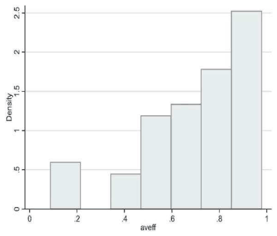
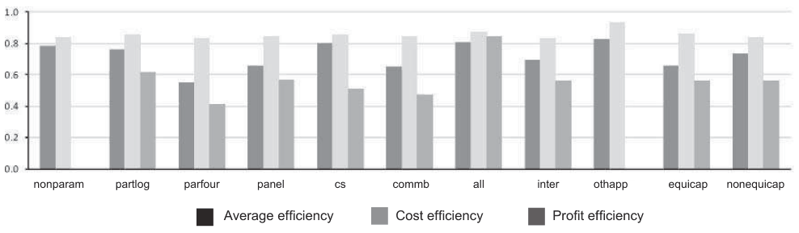

Measuring Bank Efficiency: A Meta-Regression Analysis
Zuzana Irsova, Tomas Havranek (2010), "Measuring Bank Efficiency: A Meta-Regression Analysis." Prague Economic Papers 19(4): 307-328. https://doi.org/10.18267/j.pep.379.
Zuzana Iršová, Tomáš Havránek*
JEL Classification: C13; G21; L25
*Zuzana Iršová, Charles University in Prague, Institute of Economic Studies (zuzana.irsova@ies-prague.org); Tomáš Havránek, Czech National Bank, Economic Research Department, and Charles University in Prague, Institute of Economic Studies (tomas.havranek@ies-prague.org) The views expressed are those of the authors and do not necessarily reflect the views of the Czech National Bank. The authors gratefully acknowledge financial support from the IES Research Institutional Framework 2005–2010 (MSMT 0021620841), from the Grant Agency of Charles University (grants No. 76810 and No. 89910), and from the Grant Agency of the Czech Republic (GAP402/11/0948). We thank Petr Jakubík for valuable comments.
Abstract
This article presents a meta-regression analysis of 32 studies on frontier efficiency measurement in banking, focusing on the sensitivity of the reported estimates to the methodological design. Our findings suggest that study design is crucial for the resulting scores. The differences between the scores estimated using parametric and non-parametric approaches arise when the Fourier-flexible functional form is used since this functional form yields lower scores. Generally, the higher the number of observations, the higher is the average estimated efficiency. The removal of scale effects using equity capital increases the profit efficiency but it is insignificant for other scores. The efficiency analysis should distinguish the commercial banking from other bank types because the former tends to deliver lower efficiency scores.
Keywords: meta-analysis, frontier models, efficiency analysis, banking.
1. Introduction
The importance of efficiency measurement in the financial sector is related to the substantial impact that an efficient financial system has on the microeconomic as well as the macroeconomic level of the economy. Concerning banks, the standard view of efficiency measurement employing ratio analysis can be misleading as the cross-sectional differences in input and output combinations and their prices are not properly accounted for. The first measure of firm efficiency in terms of frontier analysis, which is the main focus of this article, was proposed by Farrell (1957). His approach is considered to provide an objective numerical efficiency value and ranking of firms. Since the Farrells’ seminal work, researchers have developed a number of different methods applying the frontier approach; however, the exact definition of certain frontier estimation characteristics differs throughout the studies, thus bringing different outcomes. Some attempts to shed light on the quantitative variations in results have already been made (see, inter alia, Berger & Mester, 1997; Bauer et al. 1997; or Berger & Humphrey 1992). Nevertheless, to the present authors’ best knowledge, a study on the impact of methodological characteristics in banking efficiency estimation techniques by performing a meta-regression analysis is still missing in the discussion.
Meta-analysis combines the results of several studies that address the same problem, which can be measured and quantified by a common metric. It is thus the quantitative method of literature surveys and the way to decode useful information even from misspecified outcomes. The first applications can be found in post-war psychology, epidemiology, or medicine—nowadays, meta-analysis is the most widely used method of literature surveys in those fields. Subsequently, this method has spread to other sciences, including economics (beginning with Stanley & Jarrell, 1989). A very extensive introduction into meta-analysis is provided by Borenstein et al. (2009); explanatory meta-analysis, which we use in this paper, is well described by Stanley (2001). Using this method, aside from the estimation of the true underlying effect corrected for publication bias, one may examine how this effect is sensitive to the design of a particular study. Such an approach is called explanatory meta-regression analysis (explanatory MRA, see Stanley et al., 2008).
Explanatory MRA takes a common measure of the studied problem (in our case, average efficiency) and regresses it on the expected relevant explanatory variables: study characteristics describing study design, data properties, or authors’ specifics. Several examples of MRA’s application include Gallet & List (2003) who explore factors determining variations in studies of cigarette demand elasticities, Fidrmuc & Korhonen (2006) studying business cycle correlation between the euro-area and the Central and Eastern Europe, or the paper by Colegravea & Giles (2008) on education costs. Nevertheless, the research in efficiency analysis involving MRA is not very rich: Bravo-Ureta et al. (2007) study the technical efficiency in agriculture, Brons et al. (2005) focus on public transit efficiency performance.
The goal of this article is to explain the variation behind the efficiency estimates and to find the impact of using different methods (i.e., how researchers can influence their results ex ante by selecting a particular estimation approach). We analyze the sensitivity of empirical efficiency scores on the choice of research methodology, which is still a controversial issue in the studied literature. We focus on studies using data from the USA. The literature on the US banking efficiency is relatively rich (we found 32 methodologically comparable papers providing 53 observations) for the purposes of meta-analysis.
The remainder of the paper is structured as follows: in Section 2, we provide an overview of the frontier estimation method and introduce the moderator variables of the MRA. In Section 3, we present a summary of the used dataset, describe the procedure by which the data are collected from the primary studies and the methodology used for estimation. Section 4 comments on the results, Section 5 concludes.
2. Highlights of the Frontier Approach
Efficiency measures can be calculated relatively to the efficient technology, represented by a form of frontier function. Then, inefficiency is the distance of the other observations from this best-practice realization. In this paper, we are dealing with more types of efficiency, including:
Technical efficiency – an ability of the decision-making unit to acquire maximal output with a given set of inputs (and technology);
Profit efficiency – tells us how much (in %) of the frontier profit the subject earns ceteris paribus (how close to profit maximization the bank is);
Cost efficiency – a proportion defining how large costs of the subject are not wasted relative to the best-practice subject (how close to cost minimization the bank is).
Dummy variables reflecting the fact whether the reported efficiencies are profit, cost, or other will be used among the meta-explanatory variables aside from other factors of methodological design further described in this section.
Estimation Methods
The present practitioners of frontier efficiency estimation discuss the shape of the efficiency frontier, the existence of random error, and the assumptions about the distribution of the error term and inefficiencies in order to separate them one from another.
The commonly used non-parametric technique (employing mathematical linear programming) is the so-called data envelopment analysis (DEA1, e.g., Thompson et al., 1997), and the free disposal hull (FDH2, see Borger et al., 1998). Ignoring prices, these techniques provide information only on the technical efficiency and omit the allocative one. Secondly, any deviation from the frontier is regarded as inefficiency since they do not consider random error as a factor capable of affecting the efficiency estimate. Since DEA does not explicitly require specifying the production function shape, it is considered to be the less restrictive approach.
Among the parametric techniques (or econometric, based on empirical knowledge), the three most common are stochastic frontier approach (SFA, Clark & Siems, 2002), distribution-free approach (DFA, Berger, 1995), and the thick frontier approach (TFA as in Humphrey & Pulley, 1997; and at last, FE, fixed effect, used in Berger & Di Patti, 2002), in which the author arbitrarily chooses the form of the firms’ production function.3 These methods take inefficiency as a distance from the efficient frontier. The key element, but also the major weakness, is the a priori assumption on how random error will be separated from the inefficiency. If DFA level is reported, the 5% truncation level will be used as this particular level yields approximately the same average efficiency as most of the parametric frontier efficiency studies (Dietsch & Lozano-Vivas, 2000). Parametric methods can be split into the two major lines: primal and dual approach. When the production function in parametric approaches is relaxed of prices and is directly estimated, the approach is called primal, but the estimation may be biased and inconsistent if profit maximization or cost minimization is valid as the firms’ behaviour (e.g., Mahajan et al., 1996). Dual approach solves this biasedness, since the parametric approaches use the cost and/or profit functional forms (see Rogers, 1998). As noted for example by Berger et al. (2009), profit efficiency is a more inclusive concept than cost efficiency, because the latter oversees operating revenues and loan losses.
Efficiency frontiers
Efficiency frontiers can be chosen as deterministic or stochastic; the former assumes that any deviation from the frontier arises due to inefficiency while the latter allows for some statistical noise. A more detailed explanation can be found in Brons et al. (2005). Stochastic frontiers are commonly used in parametric methods and estimated by the maximum likelihood (ML) estimator. The functional form covers two disturbance elements: systematic error called inefficiency and random error. On the other hand, deterministic frontiers in parametric methods assume a functional form estimated by corrected ordinary least squares (OLS) or ML method, in non-parametric methods they are commonly used for instance in DEA or FDH estimations.
Functional Form
Parametric methods need to formulate the exact shape of the production function. Despite Farrell’s usage of the Cobb-Douglas function (Farrell, 1956), the recent literature focuses more on its less restrictive variations:
1. Transcendental logarithmic or translog form, which, however, does not have to fit well the data containing output far from the mean;
2. Fourier-flexible form augments the translog function by an inclusion of the trigonometric terms.
Many authors argue that the Fourier form is a more appropriate form to be used (regarding efficiency in the banking sector, see McAllister & McManus, 1993), since it fits the data better. However, Berger & Mester (1997) do not support the view in favour of a significant difference between the last two forms: according to their empirical research, the average difference in efficiency estimated by these forms is less than 1%.
Defining Bank Output
The efficiency estimation approach requires choosing the output of the banking sector. Berger & Humphrey (1992) provide a useful overview on this topic. Because of the disputes about the approach to output definitions, we analyze how the different output measurement influences the estimation results.
In the intermediation (asset) approach, banks play the role of intermediaries between liability holders and funds receivers, outputs are loans and other assets, inputs are deposits and other liabilities. Outputs are measured in money volume of the bank’s loans (definition from paper of Sealey & Lindley 1977 is commonly used). The production approach treats banks as firms which utilize capital and labour inputs to produce physical output quantities, whereas in the value-added approach, outputs are measured in value terms. For the value-added approach, the intermediation process treats the items with substantial value added (with large expenditures on labour and physical capital) as outputs; and those requiring a small amount of physical labour and capital as inputs (approach suggested by Berg et al., 1991). Developed by Hancock (1986), the user cost approach defines the financial product as an input or output according to its net contribution to the bank’s revenue—outputs are products for which financial return over asset exceeds fund opportunity costs or for which financial costs of liability do not overrun the opportunity costs; otherwise, the product is an input.
The most debated issue in choice of output refers to the role of deposits. According to Casu & Molyneux (2000), deposits are an input to the production process (intermediation/asset approach) but also an output if involved in the creation of value-added (production approach), an output for which customers bear the opportunity costs (value added approach, user cost approach). The number of input and output variables differs throughout the studies, as well as the number of fixed variables included into the production function model. Inclusion of equity capital to control for the increased costs of funds due to the financial risk or for scaling may play a significant role; see DeYoung & Hasan (1998) or Berger & Mester (1997).
Other Descriptive Meta-variables
With respect to the banking structure, diversity in efficiency levels might be affected by the heterogeneity of bank types, for they face different risks or provide diverse services. Therefore, many authors draw the attention to particular types of these institutions, such as commercial, savings or co-operative banks. Data aggregation is another aspect of the studies; the efficiency might be estimated on bank, country or regional level. Data are cross-sectional or panel; while some authors eliminate the incomplete bank observations, the others use unbalanced datasets.
3. Data and Methodology
Methodology employed in this paper follows the meta-analysis of Bravo-Ureta et al. (2001), the study on technical efficiency in agriculture. To construct the data sample, we searched for articles reporting bank efficiency estimates based on the frontier computation approach for the USA. The collection of the relevant literature was conducted primarily by searching the Econlit database supplemented by Jstor, SSRN, RePEc, and Google Scholar search for combinations of keywords “bank efficiency” and “frontier analysis”; and by reviewing references of the articles found throughout this search. The literature search was terminated on December 10, 2008. The Berger & Humphrey (1997) literature review on the efficiency of financial institutions was contributory as well.
In the process, theoretical studies and other papers with incomplete statistical information were excluded. The decision over the choice of the US banking sector efficiency analysis was made due to the reasonably large body of available empirical literature. By means of restricting our analysis to the US studies we try to avoid the worst of heterogeneity that constitutes an important issue in meta-analysis, the notable influence of different institutional backgrounds on the estimated efficiency scores. Our sample consists of 32 studies (providing 53 observations for the meta-analysis), characteristics of which can be found in Table 1. Table 1 reports the number of studies and the definitions for the chosen meta-explanatory variables taken from the papers with their corresponding number of observations. The number of observations is divided into five groups, first on the whole collected data sample (all), then on the sample of old and new studies (see later in Section 4, the datasets used in papers range from 1977 till 1997, divided in the year 1992, the year representing a turning point in the economic development of the country facing a “credit crunch”—we find this data splitting relevant and efficiency estimated on the whole sample biased due to the significant break in bank performance because of the different economic conditions that the banks faced). Finally, data are selected and observations are recounted according to the cost or profit efficiency measurement only.
| all | old | new | cost | prof | ||
|---|---|---|---|---|---|---|
| studies | 32 | 25 | 8 | 8 | 9 | |
| observations | 53 | 29 | 24 | 13 | 21 | |
| param | = 1 if parametric approach | 44 | 21 | 23 | 12 | 21 |
| = 0 if non-parametric approach | 9 | 8 | 1 | 1 | 0 | |
| partlog | = 1 if trans-logarithmic functional form | 22 | 12 | 10 | 8 | 5 |
| parfour | = 1 if Fourier flexible functional form | 16 | 3 | 13 | 4 | 11 |
| parrest | = 1 if other functional than Fourier or tlog | 6 | 6 | 0 | 0 | 5 |
| panel | = 1 if panel data | 36 | 15 | 21 | 8 | 20 |
| = 0 if cross-sectional data | 17 | 14 | 3 | 5 | 1 | |
| commb | = 1 if commercial banks only | 36 | 15 | 21 | 11 | 16 |
| = 0 if all bank types included | 17 | 16 | 1 | 2 | 5 | |
| inter | = 1 if intermediation approach | 49 | 26 | 23 | 11 | 21 |
| = 0 if other than intermediation approach | 4 | 3 | 1 | 2 | 0 | |
| equicap | = 1 if equity capital included | 24 | 8 | 16 | 6 | 15 |
| = 0 if equity capital not included | 29 | 21 | 8 | 7 | 6 | |
| otheff | = 1 if other than cost/profit efficiency | 19 | 18 | 1 | . | . |
There are a few original papers on bank efficiency which we were forced to exclude from the analysis as the important aspect of meta-analysis is to create a dataset of studies addressing the same issue, using similar outcome measures and methodological approach that can be compared. We would like to stress that in this case it is not crucial to use necessarily all studies since we are not trying to estimate the “true” underlying effect (as it is common in some applications of meta-analysis, see, for example, Doucouliagos & Stanley, 2009; Peach & Stanley, 2009); we are simply evaluating the dependencies of results on study design. For this reason, it is also not necessary to weight observations according to the number of results taken from one paper (however, we address this issue by the usage of pseudo-panel data).
The paper by Hermalin & Wallace (1994) serves as an example; it employs Varian (1984)-based non-parametric technique for efficiency estimation, while our data sample was selected to include only the most widely used techniques of measurement such as SFA, DFA, TFA, FE from the parametric methods and DEA and FDH from the non-parametric ones. Other examples of excluded works cover the observations from Peristiani (1997) computing efficiency changes, not efficiency scores; Pi & Timme (1993) who estimate the efficiency for commercial bank holding companies while we are interested in banks only, or Mester (1996) and Wheelock & Wilson (1996) who measure efficiency on the US individual district and state level, respectively, while we are interested in the whole USA region. Details on the final selection of papers may be found in Table 3 and Table 4 in the Appendix.
In order to identify the most important moderator variables, the meta-regression technique is employed by regressing the average efficiency reported in the articles on potential explanatory variables extracted from the studies and described in the previous section. Formally, we start with the following primary model specification (particular models will be deprived of correlation and collinearity by elimination of the redundant variables):
As stated before, Table 1 presents a closer definition of variables used in the function explaining aveff, the meta-response variable. Aveff denotes the average bank efficiency of a study, extracted as a simple average of efficiencies in a time horizon (studies provide an efficiency score for each observed year) or preferably as the average efficiency of a study reported by the author himself. The distribution of aveff is depicted in Figure 1—the average estimate reaches mostly the scores of 0.8 to 0.9. Figure 2 reports an overview of the average aveff according to different data and estimation characteristics. Interestingly, the parfour variable yields the lowest average profit efficiency. Commercial banks are distinctive from the average bank in cost management.
Additionally, a few other meta-explanatory variables from model (1), which are not dummies and were not mentioned in Table 1, need to be defined. Variable lnobs denotes a logarithm of the number of all observations used in the specific model of a particular study to compute the efficiency score. Outvar and inpvar stand for the numbers of output and input variables used in the efficiency model specification (excluding fixed variables).


Unlike a conventional OLS estimation, Tobit models generate consistent estimates of coefficients in case of limited dependent variables (which bank efficiency score is – with upper limit one and lower limit zero). Usage of Tobit is a common practice in the meta-analysis of efficiency (see Bravo-Ureta et al., 2007) but the OLS regression estimates are usually also provided (Brons et al., 2005). According to Judge et al. (1988), if the dependent variable is in the form of a ratio, OLS could suffer from heteroskedasticity. For this reason, we employ Huber-White estimator for robust standard errors.
Moreover, two other kinds of estimation will be applied: first, the iteratively re-weighted least squares method (IRLS) for a robust regression (dealing with possible data contamination, which is important in meta-analysis because we had to collect all of the data ourselves) by minimizing influences of outlying observations; and secondly, the generalized least squares random-effect (RE) technique for the artificially created unbalanced pseudo-panel, where the cross-sectional part is represented by different papers (observations from the same paper have the same identification number) and the other dimension is the order of a model taken from a particular paper.
For the OLS estimation, the normality of disturbances was tested by Shapiro-Wilk and Shapiro-Francia tests. It needs to be emphasized that some of the specifications do not satisfy the normality assumption, implying a decrease in the credibility of performed F-tests (t-tests). For this reason, we will comment on the robust results in principle. Moreover, we employ IRLS, which does not assume normality for hypotheses testing, for each specification. All the models of OLS, Tobit and random effects use heteroskedasticity-robust standard errors.
4. Results and Interpretation
Overall sample in Table 2
Ramsey RESET test cannot reject the good specification of the model, disturbances are normally distributed in all models, the condition number ranges from 23 to 42 for the given model specifications (even if above the usually recommended threshold 30, we consider this result to be acceptable). The coefficient for cost efficiency is significantly positive with respect to technical efficiency at the 5% level and varies around 14%, all other things unchanged. On the contrary, we found less significant but still robust evidence for profit scores being lower on average. The joint hypothesis testing proved the 1% level significant variations between the efficiency types.
Our results say that commercial banking is on average 14% less efficient than all banks (specialized or not). The role and share of participation of commercial banks on the US credit market has evolved and increased since the 1990s (the economies noted an increase in borrowings by households and the securitization of home mortgages, as well). Bank types differ in structure, institutional environment, even in the nature of outputs (financial services) and the significant difference does not necessarily flow from the managerial decision-making only. Despite these facts, the result was not anticipated due to the savings and loans crises of the 1980s and the early 1990s period.
The impact of the observations number is found to be highly significant. The positive impact on efficiency can be explained by the broader comparison of institutions—studies with a lower number of banks as observations made the selection according to a limit of minimum assets of a particular bank (e.g., according to the bank size). Other parametric specifications (except for the one using Fourier-flexible production function) are robustly insignificant from non-parametric approaches. What is more, the translog production function brings significantly larger scores than the Fourier one. Even if researchers (e.g. Berger & Mester, 1997) suggest that parametric and nonparametric approaches yield diverse scores, the F-test performed on our full sample proved such a choice in estimation proceedings to be significant at the 11-16% level only.
Similarly, the alternatives of the intermediation approach, equity capital inclusion (robustly insignificant), panel data usage and number of output and input variables does not yield results relevant on any conventional statistical level, meaning that there are no significant differences in the results of these methods or their replaceable variants (choice of inter or othapp, choice of the lower or higher output number, etc.). Sample data range can be divided into two subsamples, as the time span observed is quite large and the industry was facing various changes.
Bank efficiency till 1992 in Table 5 and since 1992 in Table 6 in the Appendix
The executed Chow test demonstrated at the 1% level that it is more reasonable to divide the sample into two parts—till 1992 when the US bank performance faced the “credit-crunch” period (CAMEL downgrades exceeded upgrades) and a deep crisis, versus the period since 1992. On the divided samples, we cannot reject the normality of disturbances at the 5% level; what is more, the RESET test cannot reject the null of the model being correctly specified; besides the condition numbers range between 29 and 32 for the old data and 32 and 38 for the “newer” set.
Due to the collinearity we had to eliminate the dummy denoting commercial banks commb, therefore we cannot compare it between the two periods. However, for the “older” sample, commb is to the high extent insignificant in contrast to Table 2. An interesting result arises when looking at the different types of efficiency—for the “older” sample, even the technical efficiency is significantly lower than the cost efficiency and insignificant in comparison to the profit efficiency; better specification of the model is suggested to be with cost efficiency only (see sensitivity analysis in Table 5). The significance and difference from cost efficiency increases when comparing with all other efficiencies (profit included).
In comparison with the result of the “newer” dataset, the cost efficiency impact increased more than twice in the observed time span.
Inclusion of equity capital into the model is only marginally significant for the “older” data, and becomes insignificant for the “newer” dataset. Moreover, in the older sample, the intermediation approach usage is insignificant; for the newer dataset it is found to have significantly negative impact (and high) on the overall efficiency score. The reasoning behind the result may be connected to the structural shifts in inputs and outputs of the banks. The impact of variables denoting (non)parametric approaches is inconclusive for the old sample due to the model specification (avoiding multicollinearity), just as the number of output variables or panel/cs data aggregation. For the newer dataset, parametric approaches are significantly different from the non-parametric, yielding lower efficiency scores and their omission from the model is strongly rejected by the joint hypothesis testing. Furthermore, for the new data, usage of trans-logarithmic function does not bring significantly different results than the usage of the Fourier one.
Bank cost efficiency in Table 7 and profit efficiency in Table 8 in the Appendix
Finally, the sample was split into two parts, according to the efficiency type (cost and profit only). Berger & Mester (1997) report that efficiency estimates in terms of either average industry efficiency or rankings of individual firms are fairly robust toward differences in methodology. On the other hand, Berger & DeYoung (1997) claim that measured cost inefficiencies are about twice as large when the translog is specified instead of the Fourier-flexible form. According to the results from Table 7, we would support the insignificance of the differences in case of bank cost efficiency; unfortunately, due to the lack of observations, Table 7 cannot be credibly interpreted.
For the profit efficiency, however, the ability of the model to explain the variance in the response variable aveff is higher than in the previous specifications, as Table 8 reports. The normality of disturbances cannot be rejected at the 5% level in the full model as well as in its sensitivity check. Ramsey RESET test provides a support for a good model specification. The choice of the non-parametric approach is significantly different from the parametric approaches, which have (both partlog and parfour) a decreasing influence on the profit efficiency. Even though parfour seems to yield lower scores than partlog, our results support the Berger & Mester (1997) study who found only a small difference in average profit efficiencies when using these two choices of functional form.
| Variable | specification 1 | specification 2 | ||||||
|---|---|---|---|---|---|---|---|---|
| Tobit | OLS | IRLS | RE | Tobit | OLS | IRLS | RE | |
| constant | 0.520* | 0.520* | 0.487 | 0.472† | 0.628** | 0.628** | 0.605** | 0.619** |
| (2.31) | (2.05) | (1.57) | (1.85) | (5.78) | (5.31) | (3.68) | (5.57) | |
| parfour | −0.148* | −0.148† | −0.167* | −0.113 | −0.159* | −0.159* | −0.172* | −0.133 |
| (−2.09) | (−1.86) | (−2.24) | (−1.34) | (−2.25) | (−2.07) | (−2.40) | (−1.64) | |
| panel | −0.0366 | −0.0366 | −0.0364 | −0.0247 | −0.0488 | −0.0488 | −0.0424 | −0.0463 |
| (−0.71) | (−0.63) | (−0.42) | (−0.39) | (−0.94) | (−0.86) | (−0.61) | (−0.79) | |
| cost | 0.146* | 0.146* | 0.171* | 0.149* | 0.131* | 0.131* | 0.138† | 0.136* |
| (2.39) | (2.13) | (2.09) | (2.18) | (2.26) | (2.07) | (1.81) | (2.13) | |
| prof | −0.152* | −0.152† | −0.128 | −0.160* | −0.145† | −0.145† | −0.134 | −0.152† |
| (−2.09) | (−1.85) | (−1.51) | (−1.97) | (−1.91) | (−1.75) | (−1.68) | (−1.86) | |
| lnobs | 0.0359* | 0.0359† | 0.0386† | 0.0379* | 0.0242† | 0.0242 | 0.0272 | 0.0243 |
| (2.25) | (2.00) | (1.78) | (2.23) | (1.71) | (1.57) | (1.53) | (1.63) | |
| commb | −0.140* | −0.140* | −0.150† | −0.141* | −0.128* | −0.128* | −0.131† | −0.124* |
| (−2.54) | (−2.25) | (−1.95) | (−2.28) | (−2.49) | (−2.29) | (−1.93) | (−2.20) | |
| inter | 0.0308 | 0.0308 | 0.0226 | 0.0321 | 0.0487 | 0.0487 | 0.0484 | 0.0510 |
| (0.46) | (0.41) | (0.20) | (0.44) | (0.99) | (0.91) | (0.46) | (1.04) | |
| equicap | 0.0790 | 0.0790 | 0.0665 | 0.0954 | 0.0778 | 0.0778 | 0.0635 | 0.0922 |
| (1.24) | (1.10) | (0.98) | (1.27) | (1.28) | (1.18) | (0.98) | (1.34) | |
| nonparam | 0.0723 | 0.0723 | 0.0758 | 0.0816 | ||||
| (1.04) | (0.93) | (0.73) | (1.04) | |||||
| outvar | −0.0213 | −0.0213 | −0.0256 | −0.0210 | ||||
| (−1.13) | (−1.01) | (−1.03) | (−0.94) | |||||
| inpvar | 0.0300 | 0.0300 | 0.0398 | 0.0370 | ||||
| (0.84) | (0.74) | (0.72) | (0.90) | |||||
| Observations | 53 | 53 | 53 | 53 | 53 | 53 | 53 | 53 |
| R2 | 0.471 | 0.485 | 0.453 | 0.448 |
Dependent variable aveff, t statistics in parentheses. Note: OLS, Tobit and RE computed using heteroskedasticity robust (Huber-White sandwich est.) t statistics. † p < 0.10, * p < 0.05, ** p < 0.01
The more input variables are used in the efficiency estimation, the higher the profit score one gets. This does not mean that if the average bank increases the outputs, it increases the relative exploitation of revenue possibilities. It only says that the measurement is significantly affected by the number of inputs used, making the estimated result rise. Design of the study/methodology in this sense cannot be overlooked. Commercial banks are distinctively worse in profit optimization than any average bank (however, this result can be found only in two specifications of the model).
The cost and profit efficiency concepts assume that banks are risk neutral – but if a bank is more risk averse, it may hold more financial capital than what maximizes profits or minimizes costs (financial capital absorbing losses on portfolio, Berger & Mester 1997), so that even if this bank behaves according to its preferences, the score estimates can be misleading without equity capital included. Our results yield significantly higher score if equicap increases, which supports the theory. Equity introduction reduces scale bias (equity capital of small-size banks cannot be expanded to meet that of large-size banks except after a period of time—profit efficiency can be much higher for large banks because the dependent variable in profit function is a simple quantity which tends to be higher for larger banks while if normalized by equity capital it changes into the rate of return on equity, a more comparable measure across the banks of different size). Removing equity capital from the profit function attributes to larger banks larger profits, keeping the variable inside increases the average efficiency (equicap positive).
Taking the characteristics of the data into account (we are using meta-data), the coefficients of determination R2 report a relatively high ability of the models to explain variations in aveff: on average, the simple OLS with robust standard errors reports R2 = 0.45, while the IRLS method produces the coefficient value of 0.51.
5. Concluding Remarks
Efficiency in the banking sector is crucial for the economy on the micro- as well as the macro-level. Variations in the reported efficiency estimates caused by different methodological approaches may have severe consequences on the decision-making policy. To investigate the causes of such diversities, a meta-regression analysis was conducted on the sample of empirical literature, consisting of 32 studies that provide 53 models for the USA.
The explanatory meta-regression analysis was conducted using Tobit, OLS, IRLS and pseudo-panel random-effects methods, computed with heteroskedasticity-robust standard errors. The sample was additionally divided into subsets according to different time spans (periods from 1977 to 1991 and from 1992 to 1997) and according to the type of efficiency score (dual-approach cost and profit efficiency).
According to our results, the US banking sector reports significant differences in the efficiency types. Banks find it harder to keep efficiency in profits than in costs, which provides a justification for separate comparisons of cost and profit efficiencies.
Commercial banking proved to be significantly different in efficiency than all banking types on average, therefore selecting a sample on the basis of bank type is recommended in efficiency analysis. Papers with lower numbers of observations generally report lower scores than studies with a high number of degrees of freedom. The evidence suggests that Fourier functional form yields significantly lower efficiency scores than any other methodological choice in the sample. In regressions for separate time spans, we found a significant difference in the nonparametric and parametric approaches for the period from 1992 till 1997, and the evidence for insignificance of panel data or number of inputs and outputs. For the profit efficiency sample, the usage of parametric approach yields lower profit scores and the inclusion of equity capital significantly removes scale bias (there is a positive relation to the efficiency). Commercial banks have lower profit efficiencies and the number of inputs used in the primary study significantly influences the reported profit efficiency.
Interestingly, the functional forms operate generally in opposite directions (translog functional form positively and Fourier functional form negatively), which contradicts the results in Berger & Mester (1997) who favour an insignificant difference between these two forms. According to our results, the translog parametric choice does not return results significantly different from the non-parametric approaches. Therefore, when researchers happen to find different results between parametric and non-parametric approaches, it is mainly due to the usage of Fourier-flexible production function.
We hope that this meta-analysis will help to bridge the gap between empirical studies on banking efficiency on one side and the theoretical discussion about the appropriate methodology on the other. It aims to uncover the heterogeneity behind the estimated efficiency scores using different methods of the frontier efficiency analysis. The central message is straightforward: the methodology matters for the results. However, since this is, to our knowledge, the first empirical attempt in banking efficiency using meta-regression analysis, the findings still need to be verified by future research using a broader sample of empirical studies.
References
- Akhavein, J. D., Berger, A. N., Humphrey, D. B. (1997), “The Effects of Megamergers on Efficiency and Prices: Evidence from a Bank Profit Function.” Review of Industrial Organization 12, pp. 95–139.
- Akhigbe, A., McNulty, J. E. (2003), “The Profit Efficiency of Small US Commercial Banks.” Journal of Banking & Finance 27(2), pp. 307–325.
- Aly, H. Y., Grabowski, R., Pasurka, C., Ran, N. (1990), “Technical, Scale, and Allocative Efficiencies in U.S. Banking: An Empirical Investigation.” The Review of Economics and Statistics 72(2), pp. 211–18.
- Bauer, P. W., Berger, A. N., Ferrier, G. D., Humphrey, D. B. (1997), “Consistency Conditions for Regulatory Analysis of Financial Institutions: a Comparison of Frontier Efficiency Methods.” Financial Services Working Paper 97-02, Federal Reserve Bank of Cleveland.
- Berg, S., Forsund, F., Jansen, E. (1991), “Technical Efficiency of Norwegian Banks: The Non-Parametric Approach to Efficiency Measurement.” The Journal of Productivity Analysis 2, pp. 127–142.
- Berger, A. N. (1995), “The Profit-Structure Relationship in Banking–Tests of Market-Power and Efficient-Structure Hypotheses.” Journal of Money, Credit and Banking 27(2), pp. 404–31.
- Berger, A. N., DeYoung, R. (1997), “Problem Loans and Cost Efficiency in Commercial Banks.” Journal of Banking & Finance 21(6), pp. 849–870.
- Berger, A. N., Hancock, D., Humphrey, D. B. (1993), “Bank Efficiency Derived from the Profit Function.” Journal of Banking & Finance 17(2-3), pp. 317–347.
- Berger, A. N., Hannan, T. H. (1997), “Using Efficiency Measures to Distinguish among Alternative Explanations of the Structure-Performance Relationship in Banking.” Managerial Finance 23(1), pp. 6–31.
- Berger, A. N., Hasan, I., Zhou, M. (2009), “Bank Ownership and Efficiency in China: What Will Happen in the World’s Largest Nation?” Journal of Banking & Finance 33(1), pp. 113–130.
- Berger, A. N., Humphrey, D. B. (1992), Measurement and Efficiency Issues in Commercial Banking, Chapter 7 in Output Measurement in the Service Sectors, pp. 245–279. University Chicago Press.
- Berger, A. N., Humphrey, D. B. (1997), “Efficiency of Financial Institutions: International Survey and Directions for Future Research.” European Journal of Operational Research 98, pp. 175–212.
- Berger, A. N., Mester, L. J. (1997), “Inside the Black Box: What Explains Differences in the Efficiencies of Financial Institutions?” Journal of Banking & Finance 21(7), pp. 895–947.
- Berger, A. N., di Patti, E. B. (2002), “Capital Structure and Firm Performance: a New Approach to Testing Agency Theory and an Application to the Banking Industry.” Finance and Economics Discussion Series 2002-54, Board of Governors of the Federal Reserve System (U.S.).
- Bonin, J. P., Hasan, I., Wachtel, P. (2005), “Privatization Matters: Bank Efficiency in Transition countries.” Journal of Banking & Finance 29(8-9), pp. 2155 –2178.
- Borenstein, M., Hedges, L. V., Higgins, J., Rothstein, H. R. (2009), Introduction to Meta-Analysis. John Wiley & Sons Inc. ISBN: 0470743387.
- Borger, B. D., Ferrier, G. D., Kerstens, K. (1998), “The Choice of a Technical Efficiency Measure on the Free Disposal Hull Reference Technology: A Comparison Using US Banking Data.” European Journal of Operational Research 105(3), pp. 427–446.
- Bravo-Ureta, B. E., Rivas, T. E., Thiam, A. (2001), “Technical Efficiency in Developing Country Agriculture: a Meta-Analysis.” Agricultural Economics 25(2-3), pp. 235–243.
- Bravo-Ureta, B. E., Solíz, D., Lopéz, V. H. M., Maripani, J. F., Thiam, A., Rivas, T. E. (2007), “Technical Efficiency in Farming: a Meta-Regression Analysis.” Journal of Productivity Analysis 27(1), pp. 57–72.
- Brons, M., Nijkamp, P., Pels, E., Rietveld, P. (2005), “Efficiency of Urban Public Transit: A Meta-Analysis.” Transportation 32, pp. 1–21.
- Casu, B., Molyneux, P. (2000), “A Comparative Study of Efficiency in European Banking.” Working Paper Series 17, School of Accounting, Banking and Economics, University of Wales.
- Chen, Y. (2001), Three Essays on Bank Efficiency. Ph.D. thesis, Drexel University.
- Clark, J. A. (1996), “Economic Cost, Scale Efficiency, and Competitive Viability in Banking.” Journal of Money, Credit and Banking 28(3), pp. 342–64.
- Clark, J. A., Siems, T. F. (2002), “X-efficiency in Banking: Looking beyond the Balance Sheet.” Journal of Money, Credit and Banking 34(4), pp. 987–1013.
- Colegravea, A. D., Giles, M. J. (2008), “School Cost Functions: A Meta-Regression Analysis.” Economics of Education Review 27(6), pp. 688–696.
- DeYoung, R. (1997a), “A Diagnostic Test for the Distribution-Free Efficiency Estimator: An Example Using U.S. Commercial Bank Data.” European Journal of Operational Research 98(2), pp. 243–249.
- DeYoung, R. (1997b), “Bank Mergers, X-efficiency, and the Market for Corporate Control.” Managerial Finance 23(1), pp. 32–47.
- DeYoung, R., Hasan, I. (1998), “The Performance of de novo Commercial Banks: A Profit Efficiency Approach.” Journal of Banking & Finance 22(5), pp. 565–587.
- DeYoung, R., Hasan, I., Kirchhoff, B. (1998), “The Impact of Out-of-State Entry on the Cost Efficiency of Local Commercial Banks.” Journal of Economics and Business 50(2), pp. 191–203. 320 PRAGUE ECONOMIC PAPERS, 4, 2010
- DeYoung, R., Nolle, D. E. (1996), “Foreign-Owned Banks in the United States: Earning Market Share or Buying it?” Journal of Money, Credit and Banking 28(4), pp. 622–36.
- Dietsch, M., Lozano-Vivas, A. (2000), “How the Environment Determines Banking Efficiency: A Comparison between French and Spanish Industries.” Journal of Banking and Finance 24, pp. 985–1004.
- Doucouliagos, H., Stanley, T. D. (2009), “Publication Selection bias in Minimum-Wage Research? A Meta-Regression Analysis.” British Journal of Industrial Relations 47(2), pp. 406–428.
- Edgeworth, F. (1881), Mathematical Psychics: An Essay on the Application of Mathematics to the Moral Sciences. London: Kegan Paul & Co.
- English, M., Grosskopf, S., Hayes, K., Yaisawarng, S. (1993), “Output Allocative and Technical Efficiency of Banks.” Journal of Banking & Finance 17(2-3), pp. 349–366.
- Farrell, J. M. (1957), “The Measurement of Productive Efficiency.” Journal of the Royal Statistical Society 120(1), pp. 253–290.
- Ferrier, G. D., Grosskopf, S., Hayes, K., Yaisawarng, S. (1993), “Economies of Diversification in the Banking Industry: A Frontier Approach.” Journal of Monetary Economics 31(2), pp. 229–249.
- Ferrier, G. D., Lovell, C. A. K. (1990), “Measuring Cost Efficiency in Banking: Econometric and Linear Programming Evidence.” Journal of Econometrics 46(1-2), pp. 229–245.
- Fidrmuc, J., Korhonen, I. (2006), “Meta-Analysis of the Business Cycle Correlation between the Euro Area and the CEECs.” Cesifo Working Paper Series, CESifo GmbH.
- Gallet, C. A., List, J. A. (2003), “Cigarette Demand: a Meta-Analysis of Elasticities.” Health Economics 12(10), pp. 821–835.
- Hancock, D. (1986), “A Model of the Financial Firm with Imperfect Asset and Deposit Elasticities.” Journal of Banking & Finance 10(1), pp. 37–54.
- Haslem, J. A., Scheraga, C. A., Bedingfield, J. P. (1999), “DEA Efficiency Profiles of U.S. Banks Operating Internationally.” International Review of Economics & Finance 8(2), pp. 165–182.
- Hermalin, B. E., Wallace, N. E. (1994), “The Determinants of Efficiency and Solvency in Savings and Loans.” RAND Journal of Economics 25(3), pp. 361–381.
- Humphrey, D. B., Pulley, L. B. (1997), “Banks’ Responses to Deregulation: Profits, Technology, and Efficiency.” Journal of Money, Credit and Banking 29(1), pp. 73–93.
- Iqbal, Z., Ramaswamy, K. V., Akhigbe, A. (1999), “The Output Efficiency of Minority-Owned Banks in the United States.” International Review of Economics & Finance 8(1), pp. 105–114.
- Judge, G. G., Griffiths, W. E., Lutkepohl, H., Hill, R. C., Lee, T.-C. (1988), Introduction to the Theory and Practice of Econometrics. Wiley, John & Sons, Incorporated, 2nd edition.
- Kaparakis, E. I., Miller, S. M., Noulas, A. G. (1994), “Short-Run Cost Inefficiency of Commercial Banks: A Flexible Stochastic Frontier Approach.” Journal of Money, Credit and Banking 26(4), pp. 875–93.
- Kulasekaran, S., Shaffer, S. (2002), “Cost Efficiency among Credit Card Banks.” Journal of Economics and Business 54(6), pp. 595–614.
- Mahajan, A., Rangan, N., Zardkoohi, A. (1996), “Cost Structures in Multinational and Domestic Banking.” Journal of Banking & Finance 20(2), pp. 283–306.
- McAllister, P. H., McManus, D. (1993), “Resolving the Scale Efficiency Puzzle in Banking.” Journal of Banking & Finance 17(2-3), pp. 389–405.
- Mester, L. J. (1993), “Efficiency in the Savings and Loan Industry.” Journal of Banking & Finance 17(2-3), pp. 267–286.
- Mester, L. J. (1996), “A Study of Bank Efficiency Taking into Account Risk-Preferences.” Journal of Banking & Finance 20(6), pp. 1025–1045.
- Mester, L. J. (1997), “Measuring Efficiency at U.S. Banks: Accounting for Heterogeneity Is Important.” European Journal of Operational Research 98(2), pp. 230–242.
- Miller, S. M., Noulas, A. G. (1996), “The Technical Efficiency of Large Bank Production.” Journal of Banking & Finance 20(3), pp. 495–509.
- Pareto, V. (1927), Manuel d’economie politique. Paris: Giard et Brier, 2nd edition.
- Peach, E. K., Stanley, T. (2009), “Efficiency Wages, Productivity and Simultaneity: A Meta-Regression Analysis.” Journal of Labor Research 30(3), pp. 262–268.
- Peristiani, S. (1997), “Do Mergers Improve the X-efficiency and Scale Efficiency of U.S. Banks? Evidence from the 1980s.” Journal of Money, Credit and Banking 29(3), pp. 326–37.
- Pi, L., Timme, S. G. (1993), “Corporate Control and Bank Efficiency.” Journal of Banking & Finance 17(2-3), pp. 515–530.
- Rogers, K. E. (1998), “Nontraditional Activities and the Efficiency of US Commercial Banks.” Journal of Banking & Finance 22(4), pp. 467–482.
- Sealey, J., Calvin, W., Lindley, J. T. (1977), “Inputs, Outputs, and a Theory of Production and Cost at Depository Financial Institutions.” Journal of Finance 32(4), pp. 1251–66.
- Shephard, R. W. (1953), Cost and Production Functions. Princeton University Press, New Jersey.
- Stanley, T. D., Doucouliagos, C., Jarrell, S. B. (2008), “Meta-Regression Analysis as the Socio-Economics of Economics Research.” The Journal of Socio-Economics 37(1), pp. 276–292.
- Stanley, T. D. (2001), “Wheat from Chaff: Meta-Analysis as Quantitative Literature Review.” Journal of Economic Perspectives 15(3), pp. 131–150.
- Stanley, T. D., Jarrell, S. B. (1989), “Meta-Regression Analysis: A Quantitative Method of Literature Surveys.” Journal of Economic Surveys 3(2), pp. 161–70.
- Thompson, R. G., Brinkmann, E. J., Dharmapala, P. S., Gonzalez-Lima, M. D., Thrall, R. M. (1997), “DEA/AR Profit Ratios and Sensitivity of 100 Large U.S. Banks.” European Journal of Operational Research 98(2), pp. 213–229.
- Varian, H. (1984), “The Nonparametric Approach to Production Analysis.” Econometrica 52, pp. 579–599.
- Wagenvoort, R., Schure, P. (1999), “Who Are Europe’s Efficient Bankers?” Working Paper Series 4(1), European Investment Bank.
- Wheelock, D. C., Wilson, P. W. (1996), “Technical Progress, Inefficiency and Productivity Change in U.S. Banking, 1984-1993.” Working Papers 1994-021, Federal Reserve Bank of St. Louis. 322 PRAGUE ECONOMIC PAPERS, 4, 2010
Appendix
| Name (year) | Datayr | Method | Func | Frontier | Bank | Output | Equicap | Data | Nobs | Aveff |
|---|---|---|---|---|---|---|---|---|---|---|
| Akhavein et al. (1997) | 1980-1990 | DFA | fuss | stoch TP | all | inter | incl | panel | 2 944 | 0.820 |
| Aly et al. (1990) | 1986 | DEA | deter | all | ucost | notincl | cs | 322 | 0.750 | |
| Berger et al. (1993) | 1984-1989 | DFA | fuss | stoch TC | commb | inter | notincl | panel | 516 | 0.516 |
| Berger (1995) | 1980-1989 | DFA | tlog | stoch TC | all | inter | notincl | panel | 15 497 | 0.616 |
| Berger & Hannan (1997) | 80-4,86-9 | DFA | tlog | stoch OC | all | inter | notincl | panel | 219 | 0.566 |
| Berger & Mester (1997) | 1990-1995 | DFA | four | stoch TC | commb | inter | incl | panel | 5 949 | 0.868 |
| four | stoch TP | 5 949 | 0.549 | |||||||
| four | stoch aP | 5 949 | 0.463 | |||||||
| tlog | stoch TC | 5 949 | 0.860 | |||||||
| tlog | stoch TP | 5 949 | 0.539 | |||||||
| tlog | stoch aP | 5 949 | 0.452 | |||||||
| 90-1,93-5 | SFA | four | stoch TC | 5 949 | 0.942 | |||||
| 1990-1993 | four | stoch aP | 5 949 | 0.351 | ||||||
| DFA | four | stoch TC | notincl | 5 950 | 0.869 | |||||
| four | stoch TP | 5 951 | 0.088 | |||||||
| four | stoch aP | 5 952 | 0.106 | |||||||
| Berger & di Patti (2002) | 1990-1995 | DFA | four | stoch TP | commb | inter | incl | panel | 7 320 | 0.575 |
| stoch aP | 7 320 | 0.587 | ||||||||
| FE | stoch TP | 7 320 | 0.136 | |||||||
| stoch aP | 7 320 | 0.175 | ||||||||
| Clark (1996) | 1988-1991 | TFA | stoch TC | commb | va | incl | panel | 440 | 0.910 | |
| Clark & Siems (2002) | 1992-1997 | SFA | tlog | stoch TC | commb | inter | incl | panel | 1 080 | 0.852 |
| stoch TP | 1 080 | 0.646 | ||||||||
| stoch TC | 1 080 | 0.741 | ||||||||
| stoch TP | 1 080 | 0.748 | ||||||||
| DeYoung & Nolle (1996) | 1985-1990 | DFA | quadvar | stoch TC | all | inter | incl | panel | 1 812 | 0.935 |
| Berger & DeYoung (1997) | 1985-1994 | SFA | four | stoch OC | commb | inter | notincl | unpanel | 57 655 | 0.922 |
| DeYoung (1997a) | 1984-1994 | DFA | tlog | stoch TC | commb | inter | notincl | cs | 6 798 | 0.794 |
| DeYoung (1997b) | 1987-1988 | TFA | tlog | stoch TC | all | inter | notincl | cs | 348 | 0.745 |
| DeYoung & Hasan (1998) | 88,90,2,4 | SFA | four | stoch TP | commb | inter | incl | cs | 16 282 | 0.511 |
| Name (year) | Datayr | Method | Func | Frontier | Bank | Output | Equicap | Data | Nobs | Aveff |
|---|---|---|---|---|---|---|---|---|---|---|
| DeYoung et al. (1998) | 1992 | EFA | four | stoch TC | commb | inter | notincl | cs | 3 997 | 0.662 |
| English et al. (1993) | 1982 | deter | all | inter | notincl | cs | 422 | 0.754 | ||
| Ferrier & Lovell (1990) | 1984 | tlog | stoch TC | all | inter | notincl | cs | 575 | 0.911 | |
| DEA | deter C | 575 | 0.840 | |||||||
| Ferrier et al. (1993) | 1984 | deter | all | prod | notincl | cs | 575 | 0.685 | ||
| Borger et al. (1998) | 1984 | FDH | deter | commb | inter | notincl | cs | 576 | 0.949 | |
| Haslem et al. (1999) | 1987,92 | DEA | deter | commb | inter | notincl | cs | 6 | 0.555 | |
| Humphrey & Pulley (1997) | 1977-1980 | TFA | quadvar | stoch P | all | inter | notincl | panel | 2 732 | 0.810 |
| 1981-1984 | 2 732 | 0.820 | ||||||||
| 1984-1988 | 3 415 | 0.850 | ||||||||
| Chen (2001) | 1988-1997 | DFA | tlog | stoch TC | commb | prod | notincl | cs | 451 347 | 0.961 |
| Iqbal et al. (1999) | 1994 | deter | all | inter | notincl | cs | 91 | 0.914 | ||
| Kaparakis et al. (1994) | 1986 | SFA | tlog | stoch TC | commb | inter | notincl | cs | 5 548 | 0.902 |
| Mahajan et al. (1996) | 1987-1990 | TFA | tlog | stoch OC | all | inter | notincl | panel | 13 713 | 0.972 |
| Akhigbe & McNulty (2003) | 1990,2,4,6 | SFA | four | stoch OP | commb | inter | incl | panel | 1 703 | 0.978 |
| Mester (1993) | 1991 | SFA | tlog | stoch TC | savb | inter | notincl | cs | 1 015 | 0.895 |
| Mester (1997) | 1991-1992 | SFA | tlog | stoch TC | all | inter | incl | cs | 6 630 | 0.840 |
| Miller & Noulas (1996) | 1984-1990 | DEA | deter | commb | inter | notincl | cs | 1 407 | 0.949 | |
| Rogers (1998) | 1991-1995 | DFA | tlog | stoch TC | commb | inter | notincl | panel | 8 386 | 0.710 |
| stoch TP | 8 386 | 0.705 | ||||||||
| Kulasekaran & Shaffer (2002) | 1984-1993 | SFA | tlog | stoch TC | commb | inter | notincl | panel | 430 | 0.616 |
| incl | 430 | 0.714 | ||||||||
| Thompson et al. (1997) | 1986-1991 | DEA | deter | commb | inter | incl | unpanel | 582 | 0.666 |
Note: Studies listed according to author and year of publication—Name (year); years for examined data in study estimations (datayr); frontier method used for efficiency estimation (SFA for stochastic frontier approach, TFA for thick frontier approach, DFA distribution free approach, FE fixed effect, DEA for data envelopment analysis and FDH is free disposal hull); functional form (func) of production in parametric method (tlog for transcendental logarithmic, four for Fourier-flexible, fuss for Fuss normalized quadratic variable function and quadvar for quadratic variable function); frontier used in study might be stoch for stochastic, deter for deterministic (including TC as total cost, TP total profit, aP alternative profit); bank distinguishes bank types such as commercial only (commb), saving banks (savb) or all included (all); output measurement recognizes four different approaches (inter for intermediation, prod for production, va for value-added and ucost for user-cost approach); equity capital (equicap) may be included or not included in the estimation of a study (inlc, nincl); data are panel (panel) or unbalanced panel (unpanel) or cross-sectional (cs). Variable nobs stands for number of observations, variable aveff is the average efficiency.
| Variable | full specification | sensitivity simulations | ||||||
|---|---|---|---|---|---|---|---|---|
| Tobit | OLS | IRLS | RE | Tobit | OLS | IRLS | RE | |
| constant | 0.796* | 0.796† | 0.944** | 0.600** | 0.458† | 0.458 | 0.0818 | 0.378 |
| (2.58) | (2.01) | (9.48) | (2.70) | (1.76) | (1.52) | (0.44) | (1.24) | |
| panel | −0.0364 | −0.0364 | −0.168** | −0.0314 | −0.0186 | −0.0186 | 0.00630 | −0.0258 |
| (−0.47) | (−0.36) | (−4.50) | (−0.30) | (−0.23) | (−0.20) | (0.12) | (−0.24) | |
| cost | 0.117* | 0.117† | 0.191** | 0.0931 | 0.150* | 0.150* | 0.0954 | 0.146 |
| (2.25) | (1.75) | (4.84) | (1.51) | (2.41) | (2.09) | (1.66) | (1.47) | |
| commb | −0.0450 | −0.0450 | −0.0794* | −0.0235 | −0.0871 | −0.0871 | −0.0648 | −0.0987 |
| (−0.61) | (−0.48) | (−2.21) | (−0.26) | (−1.60) | (−1.38) | (−1.60) | (−1.26) | |
| outvar | 0.0183 | 0.0183 | −0.0391** | 0.0292 | −0.00142 | −0.00142 | 0.0205 | 0.0147 |
| (0.67) | (0.52) | (−3.03) | (0.73) | (−0.06) | (−0.05) | (1.25) | (0.52) | |
| inpvar | 0.0129 | 0.0129 | −0.00613 | −0.00724 | 0.0417 | 0.0417 | 0.0678* | 0.0472 |
| (0.31) | (0.24) | (−0.30) | (−0.14) | (1.14) | (0.99) | (2.13) | (1.05) | |
| equicap | 0.0201 | 0.0201 | 0.0720† | 0.0915** | −0.0445 | −0.0445 | 0.0800 | 0.0600† |
| (0.46) | (0.36) | (2.08) | (8.58) | (−0.63) | (−0.54) | (1.68) | (1.73) | |
| partlog | −0.135 | −0.135 | 0.0996** | 0.0634** | ||||
| (−0.55) | (−0.43) | (2.96) | (5.79) | |||||
| parfour | −0.230 | −0.230 | −0.397** | −0.185 | ||||
| (−1.19) | (−0.93) | (−5.23) | (−0.70) | |||||
| prof | −0.0699 | −0.0699 | 0.190** | 0.0158 | ||||
| (−0.30) | (−0.23) | (3.22) | (0.10) | |||||
| inter | 0.0292 | 0.0292 | −0.0794† | 0.0640 | ||||
| (0.51) | (0.40) | (−1.79) | (0.87) | |||||
| nonparam | −0.162 | −0.162 | ||||||
| (−0.66) | (−0.52) | |||||||
| lnobs | 0.0311† | 0.0311† | 0.0602** | 0.0292 | ||||
| (2.02) | (1.75) | (5.07) | (1.45) | |||||
| Observations | 29 | 29 | 28 | 29 | 29 | 29 | 29 | 29 |
| R2 | 0.280 | 0.894 | 0.295 | 0.622 |
Dependent variable aveff, t statistics in parentheses. Note: OLS, Tobit and RE computed using heteroskedasticity robust (Huber-White sandwich est.) t statistics. † p < 0.10, * p < 0.05, ** p < 0.01
| Variable | full specification | sensitivity simulations | ||||||
|---|---|---|---|---|---|---|---|---|
| Tobit | OLS | IRLS | RE | Tobit | OLS | IRLS | RE | |
| constant | 0.609 | 0.609 | 0.951† | 0.609 | 0.399 | 0.399 | −0.0628 | 0.650 |
| (1.38) | (1.15) | (1.77) | (1.15) | (0.93) | (0.80) | (−0.25) | (0.39) | |
| cost | 0.344** | 0.344** | 0.302* | 0.344** | 0.365** | 0.365** | 0.344** | 0.332** |
| (4.63) | (3.86) | (2.71) | (3.86) | (4.85) | (4.17) | (3.80) | (3.97) | |
| outvar | 0.00139 | 0.00139 | −0.0488 | 0.00139 | 0.0328 | 0.0328 | 0.0990† | −0.00338 |
| (0.02) | (0.02) | (−0.62) | (0.02) | (0.45) | (0.39) | (1.76) | (−0.01) | |
| equicap | 0.163 | 0.163 | 0.136 | 0.163 | 0.178 | 0.178 | 0.257* | 0.270† |
| (1.40) | (1.17) | (1.04) | (1.17) | (1.56) | (1.34) | (2.50) | (1.78) | |
| nonparam | 0.504* | 0.504† | −0.0371 | 0.504* | 0.683** | 0.683** | 0.680** | 0.577 |
| (2.51) | (2.09) | (2.09) | (4.49) | (3.86) | (2.93) | (1.07) | ||
| inter | −0.203* | −0.203† | −0.203† | −0.266** | −0.266** | −0.302 | ||
| (−2.17) | (−1.81) | (−0.11) | (−1.81) | (−3.69) | (−3.17) | (−1.08) | ||
| panel | 0.00387 | 0.00387 | −0.257 | 0.00387 | 0.0922 | 0.0922 | 0.0371 | |
| (0.03) | (0.02) | (−1.22) | (0.02) | (0.74) | (0.63) | (0.09) | ||
| parfour | −0.0946 | −0.0946 | −0.165 | −0.0946 | ||||
| (−1.09) | (−0.91) | (−1.51) | (−0.91) | |||||
| Observations | 24 | 24 | 24 | 24 | 24 | 24 | 24 | 24 |
| R2 | 0.535 | 0.456 | 0.515 | 0.550 |
Dependent variable aveff, t statistics in parentheses Note: OLS, Tobit and RE computed using heteroskedasticity robust (Huber-White sandwich est.) t statistics † p < 0.10, * p < 0.05, ** p < 0.01
| Variable | full specification | sensitivity simulations | ||||||
|---|---|---|---|---|---|---|---|---|
| Tobit | OLS | IRLS | RE | Tobit | OLS | IRLS | RE | |
| constant | 0.645† | 0.645 | 0.783** | 0.645 | 0.999** | 0.999* | 0.925† | 0.848* |
| (1.95) | (1.26) | (8.70) | (1.26) | (3.70) | (2.83) | (2.26) | (2.36) | |
| commb | -0.185 | -0.185 | -0.0183 | -0.185 | -0.0874 | -0.0874 | -0.0985 | -0.137 |
| (-1.71) | (-1.11) | (-0.32) | (-1.11) | (-0.92) | (-0.70) | (-0.65) | (-0.97) | |
| partlog | -0.0220 | -0.0220 | 0.0172 | -0.0220 | ||||
| (-0.62) | (-0.40) | (0.46) | (-0.40) | |||||
| lnobs | 0.0276† | 0.0276 | 0.0133 | 0.0276 | ||||
| (2.38) | (1.54) | (1.13) | (1.54) | |||||
| inpvar | 0.0581 | 0.0581 | 0.0581 | 0.00312 | 0.00312 | 0.0290 | 0.0676 | |
| (0.57) | (0.37) | (0.37) | (0.03) | (0.02) | (0.19) | (0.52) | ||
| inter | -0.108* | -0.108† | -0.108* | -0.133† | -0.133 | -0.137 | -0.175† | |
| (-3.23) | (-2.08) | (-2.08) | (-2.16) | (-1.65) | (-1.11) | (-1.83) | ||
| panel | 0.00111 | 0.00111 | 0.00111 | 0.0296 | 0.0296 | |||
| (0.01) | (0.01) | (0.01) | (0.35) | (0.27) | ||||
| equicap | 0.120 | 0.120 | 0.120 | 0.0436 | 0.0439 | |||
| (1.25) | (0.81) | (0.81) | (0.43) | (0.84) | ||||
| parfour | 0.0250 | 0.0250 | 0.0593 | 0.0378 | ||||
| (0.48) | (0.37) | (0.56) | (0.75) | |||||
| Observations | 13 | 13 | 13 | 13 | 13 | 13 | 13 | 13 |
| R2 | 0.442 | 0.146 | 0.257 | 0.191 |
Dependent variable aveff if cost = 1, t statistics in parentheses. Note: OLS, Tobit and RE computed using heteroskedasticity robust (Huber-White sandwich est.) t statistics. † p < 0.10, * p < 0.05, ** p < 0.01
| Variable | full specification | sensitivity simulations | ||||||
|---|---|---|---|---|---|---|---|---|
| Tobit | OLS | IRLS | RE | Tobit | OLS | IRLS | RE | |
| constant | -0.169 | -0.169 | 0.0470 | -0.360 | -0.117 | -0.117 | 3.657** | -0.309 |
| (-0.41) | (-0.34) | (0.09) | (-0.94) | (-0.33) | (-0.28) | (10.41) | (-1.10) | |
| parfour | -0.578** | -0.578** | -0.654** | -0.352 | -0.153 | -0.153 | 0.212 | -0.485* |
| (-3.77) | (-3.16) | (-5.53) | (-1.12) | (-1.54) | (-1.33) | (1.76) | (-2.42) | |
| equicap | 0.303** | 0.303* | 0.250* | 0.341** | 0.287** | 0.287* | 0.367** | 0.335** |
| (3.05) | (2.55) | (2.22) | (5.11) | (3.29) | (2.85) | (5.47) | (5.07) | |
| panel | -0.0378 | -0.0378 | -0.108 | 0.142 | -0.0528 | -0.0528 | 0.0890 | |
| (-0.39) | (-0.33) | (-0.59) | (0.70) | (-0.62) | (-0.53) | (0.50) | ||
| inpvar | 0.348* | 0.348* | 0.289 | 0.363* | 0.322** | 0.322* | 0.323** | |
| (2.70) | (2.26) | (1.71) | (2.25) | (3.17) | (2.74) | (3.10) | ||
| partlog | -0.419* | -0.419† | -0.444** | -0.292 | 0.199 | -0.427* | ||
| (-2.28) | (-1.91) | (-2.98) | (-0.93) | (1.71) | (-2.48) | |||
| outvar | -0.0294 | -0.0294 | -0.0689 | -0.326** | ||||
| (-0.39) | (-0.33) | (-0.51) | (-6.06) | |||||
| commb | -0.473** | -0.473** | ||||||
| (-4.36) | (-3.77) | |||||||
| lnobs | -0.317** | |||||||
| (-7.70) | ||||||||
| Observations | 21 | 21 | 21 | 21 | 21 | 21 | 20 | 21 |
| R2 | 0.601 | 0.692 | 0.597 | 0.935 |
Dependent variable aveff if profit = 1, t statistics in parentheses. Note: OLS, Tobit and RE computed using heteroskedasticity robust (Huber-White sandwich est.) t statistics. † p < 0.10, * p < 0.05, ** p < 0.01
ENDNOTES
- DEA constructs a piecewise linear convex frontier connecting the set of best practice observations. It envelopes input and output data, relative to which costs are minimized or profit/revenue is maximized. Efficiency scores are then calculated from the frontiers generated by a sequence of linear programs. These fractional programs are defined by extremal optimization of the ratio of weighted sum of outputs to weighted multiple input, subject to the constraints of non-decreasing weights and efficiency measure less than or equal to one.
- FDH is the DEA relaxed of the convexity assumption.
- In SFA, DFA and TFA, the production function is defined by the set of explanatory variables (inputs, outputs and other possible explanatory variables as well as the form of the function is arbitrarily chosen by the author himself) and the two components of this regression´s composite error term – the random error and the inefficiency term. SFA assumes two-sided distribution (usually normal with zero mean) of the error term and one-sided distribution of the non-negative inefficiency term leaves on author’s decision (for instance half-normal, truncated-normal, normal-exponential, or normal-gamma distribution). DFA, used in panel data, relaxes composite error term of distributional assumptions. The core inefficiency is distinguished from random error by the assumption of core inefficiency being persistent over time, while random errors tend to average out over time. TFA also does not impose distributional restrictions on the composite error term but assumes that inefficiency term is different in the highest (thick frontier) and lowest efficiency quartile of the observed decision-making units and the random error is present within these quartiles.